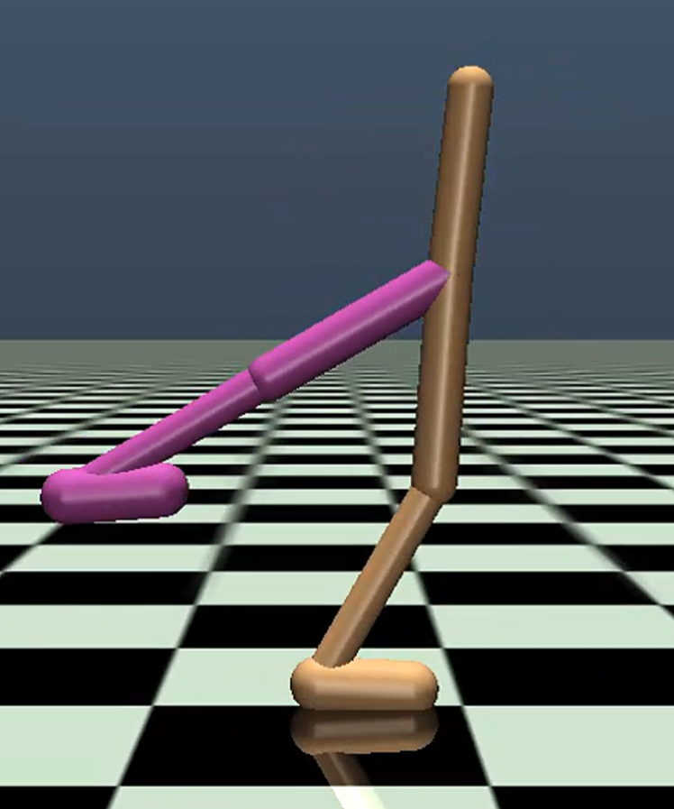
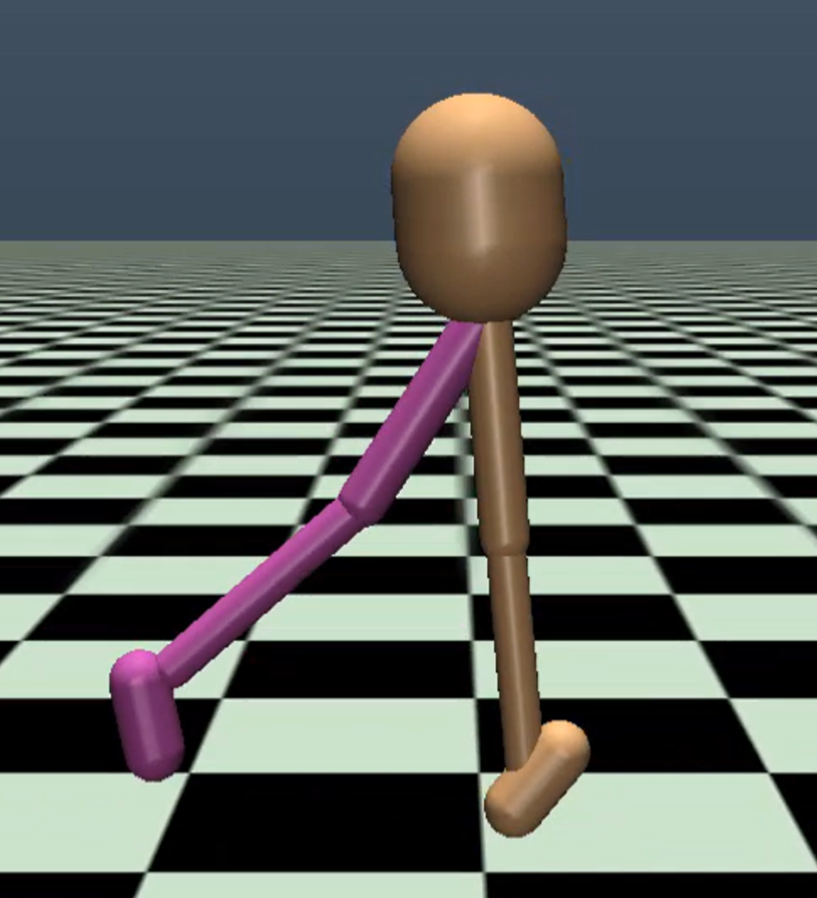
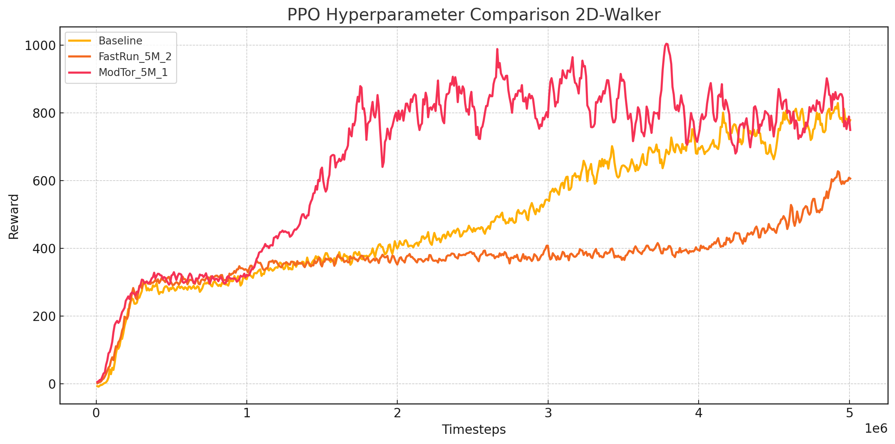

Training a customized biped model to walk forward in MuJoCo, using a PPO implementation in PyTorch.
This project focuses on achieving stable forward locomotion in a customized biped robot model within the MuJoCo Walker2D-v5 environment. I implemented a reinforcement learning algorithm based on Proximal Policy Optimization (PPO) using PyTorch, taking inspiration from Stable Baselines3. The agent successfully learned to maintain balance and walk forward after extensive training and reward shaping.


